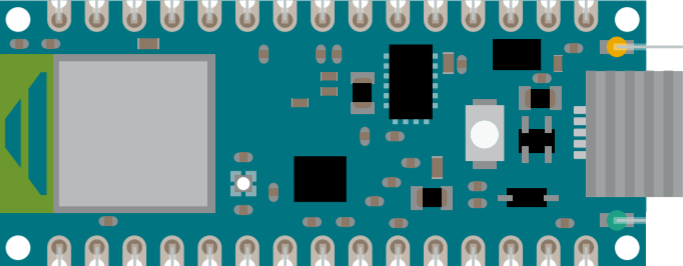
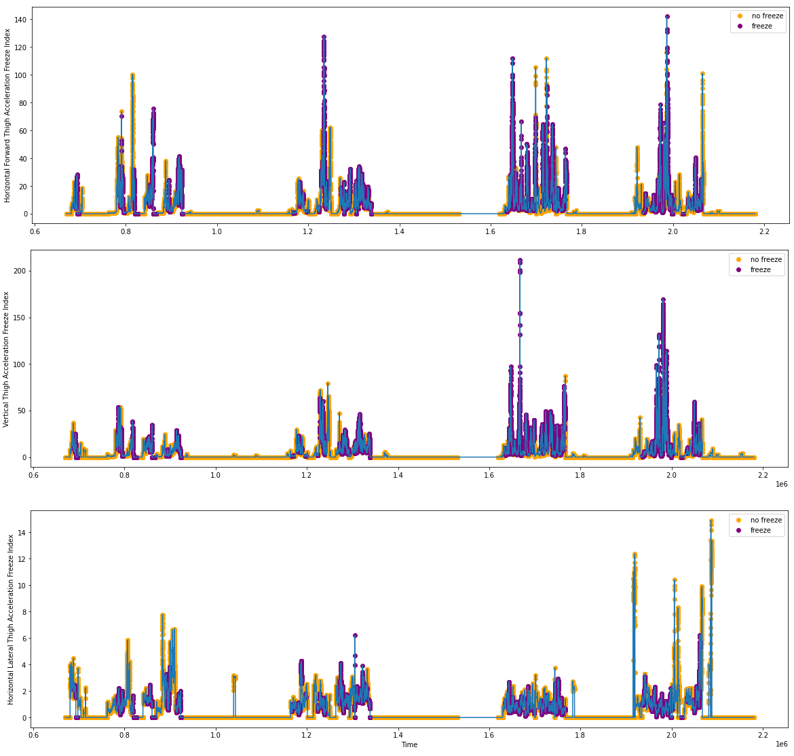

By: Nallapuraju Ananya, Ye Chen Rui and Prannaya Gupta
Research Mentor: Professor Arthur Tay
School Mentor: Mr Lim Yeow Heng
To monitor gait patterns to detect freezing of gait. Done as part of Singapore Science Mentorship Programme.
Gait Monitoring for Parkinson’s Disease Patients - Project Description * Final Product * Methodology - Abstract - Introduction - Aims and Objectives - Literature Review * Utilisation of IMUs in analysis * Machine learning approaches to detecting PD * Gait parameters to be analysed - Materials and Methods * DAPHNet Dataset * Signal Processing * SVM Analysis * Arduino Program - Results * Prototype - Conclusions and Discussions - Acknowledgements - References
The objective of this project is to monitor the gait patterns for people with Parkinson Disease. We will analyse the gait for PD patients during freezing and non-freezing (normal) events. Various parameters (e.g. cadence, step lengths, stride lengths, etc) related to gait will be derived from motion sensors (accelerometers, gyroscopes, magnetometers) using public datasets of PD patients. We will then investigate which of these parameters is most suitable for classification for freezing of gait in PD patients.
To make use of signal processing algorithms in extracting gait parameters from motion sensors and identifying most suitable parameters for classification of freezing of gait in PD patients.
Students will first need to review and understands how to extract gait parameters from motion sensors. There are different algorithms in the literature and they will need to investigate which is most suitable. They will then make use of a PD patient public dataset to test out their methods. If time permits, they will learn basic machine learning tools for classification.
Parkinson’s disease (PD) is a neurodegenerative disorder that affects the dopamine producing neurons in the substantia nigra, an area of the brain, leading to shaking, stiffness and difficulty walking. Parkinson’s patients frequently exhibit the debilitating condition freezing of gait (FOG), which is when patients cannot move their feet forward despite the intention to walk. While the feet remain in place, the torso still has forward momentum, making falls very common. At the start, FOG can be triggered by stress, tight spaces or a sudden change in direction. As the disease progresses, this happens more frequently, a fact extremely detrimental to the patient’s health and mental well-being.
Parkinson’s Disease (PD) is a progressive nervous system disorder that affects the basal ganglia, resulting in the progressive loss of dopamine neurotransmitters and poorer connection between the central nervous system and muscles[1]. This leads to many gait abnormalities, mainly tremors, bradykinesia, rigidity, and a loss of postural reflexes. Secondary motor symptoms that are evoked include stride length reduction, shuffling gait, step festination and freezing[2,3]. Freezing of Gait (FOG) is one of the most debilitating effects of PD and is defined as a brief, episodic absence or marked reduction of forward progression of the feet despite the intention to walk[3]. It has serious social and clinical consequences for patients as it leads to falls[4], interferes with daily activities and significantly impacts quality of life[5]. While FOG can happen anytime, it happens most often during turns, before gait initiation, in tight quarters such as doorways and in stressful situations[6]. It is triggered by visual stimulation.
Currently, FOG characterization is done using two main methods. In the first method, FOG is quantified by gait tests such as the timed up and go (TUG) test and the Hoehn and Yahr (H&Y) scale. The TUG test measures in seconds how long a patient takes to stand up from their chair, walk 3m past a line, turn around, walk back and sit down[7]. On the other hand, the H&Y scale has 5 stages to indicate levels of disability[8]:
In the second method, individual questionnaires are used. The Freezing Of Gait Questionnaire (FOG-Q) is a notable one, comprising 6 questions and utilising a 5-point scale to rank symptom severity[9].
However, both methods are highly inefficient in measuring FOG as it is highly sensitive to environmental triggers, medication and the patient’s mental state. Therefore, there has been research into using wearable inertial measurement units (IMUs) to display exactly the gait types of PD patients.
This study aims to compare all the ways of measuring FOG and determine the best parameter to utilise while creating an algorithm for data analysis. The comfort of the patient and the ease and accuracy in which the parameter can predict FOG will be taken into account in this study. Ultimately, a prototype that fulfils all these requirements will be made.
This section reports previous studies which have explored the application of motion sensors on PD patients to accurately predict FOG. Ferster et al.[3] placed 9-axis IMUs (comprising 3D accelerometers, 3D gyroscopes and 3D magnetometers) on both ankles of the subjects to extract gait features such as stride length and stride duration. Moreover, as FOG exhibits unique frequency ranges, they introduce and discuss frequency features such as dominant frequency, dominant frequency amplitude and the inverse of the dominant frequency slope of the acceleration data to quantify changes in gait quality. Ferster was able to show specific changes in the stride duration, stride length, dominant frequency and the inverse of the dominant frequency slope with up to four seconds prior to FoG on all subjects.
Baechlin et al.[10] proposed placing accelerometers at three different parts of the body: the shank, thigh and lower back, where the wearable computer is attached to.

Figure 1: The Baechlin et al. 3D Accelerometer Wearable System
Alam et al.[11] analyzed the vertical ground reaction force using force insoles in patients’ shoes to display gait cycles. Pinto et al.[12] again utilised accelerometers and gyroscopes to determine stride time, this time placing the accelerometer at the shank.
Based on our research, we were able to consolidate a list of the main IMUs that we were to consider as follows:
Table 1: Table of IMUs found in our literature review
| IMU | Purpose | Measured Parameter |
|---|---|---|
| Accelerometer | Measuring acceleration | Stride Length, Stride Duration |
| Gyroscope | Measuring angular velocity | Step Festination, Gait Asymmetry |
| Flexible Goniometer | Measuring body joint angles | Flat Foot Strike |
| Force- sensitive Insole | Measuring the tension and compression forces that act on the sensor | Gait Cycle (not accurate for PD patients who suffer from flat footedness) |
Many works have also tried utilising motion capture systems to annotate FOG events, synchronising sensor data and computer analysis to make way for machine learning algorithms. Kuhner et al.[13] performed this experiment, setting up 12 cameras as well as utilising an inertial measurement suit to create a ‘live’ system that reduces the latency of data processing.
The above literature confirms the success of utilising accelerometers, gyroscopes and force insoles to effectively differentiate FOG from normal gait and has greatly helped in designing the proposed approach for this study.
Aich et al.[14] have done a comprehensive review of the following four different types of machine learning algorithms in classifying patients with FOG or no FOG:
They found that the SVM classifier with radial basis function provides the highest accuracy of 91.42% as well as the highest sensitivity and specificity of 90.89% and 91.21% respectively.
Eom et al.[15] used thresholds to classify FOG and non-FOG states. The number of thresholds varied, increasing by two for every dimension added. The range between two thresholds was used to determine FOG states for 1D data while six thresholds were required for 3D data. Additionally, three FOG states (FOG: 1, non-FOG: 0) were “AND” operated to determine final FOG.
The frequency-based features discussed by Baechlin et. al[10] are reliable, but they have one major drawback. The large amount of calculations required to perform the Fast Fourier Transform (FFT) algorithm needed to analyse frequency-based data means that a digital signal processing chip is required, making it impossible to fit in a small, lightweight unobtrusive system. This would make it impractical for real life detection. For the patients with gait problems, a bulky and obtrusive system may worsen the gait disturbances. Additionally, most experiments utilised a relatively long window length (4 seconds[10], 6 seconds[16], and 10 seconds[17]) for detection, leading to a long delay in FOG detection. Eom et al.[15] suggested a simple and fast time-domain method for FOG detection that was comparable to the traditional frequency-domain method with a calculation load of 1,154 times less. This has practical clinical applications.
Previous researchers also have reported the importance of five parameters for the detection of PD. Most notably, Hollman et al.[18] have proposed five major domains of gait based on factor analysis:
Others have confirmed the importance of determining the spatiotemporal parameters. Alcock et al.[19], Coste et al.[20] and Schlachetzki et al.[21] have all discussed the importance of stride length, stride time and gait velocity in distinguishing PD patients from healthy older adults.
Overall, the following is a summary of gait parameters found in our research.
Table 2: Summary of Gait parameters found in our research
| Gait abnormalities | Definition |
|---|---|
| Step Festination | Shortening of steps |
| Decrease in Stride Duration | Decrease in the time difference between two consecutive detected acceleration peaks of the same leg |
| Postural Instability | Loss of balance |
| Increase in step-to-step time variability | Difference in time taken between each stride |
| Stride Length Reduction | Reduction in distance between each stride/step |
| Decreased Cadence | Decrease in number of steps taken per unit time |
| Gait Asymmetry | Difference in gait between the two legs of patient |
Hence, in this study, the focus will be on gait velocity, stride time and gait cycle.
Accelerometers have been chosen to be the main focus of the data analysis as they are very versatile. Research has shown that accelerometers can be used to determine stride time, gait cycle and gait velocity. Hence, they would be a good starting point.
In our main investigation, we employed the Daphnet Freezing of Gait Dataset in users with Parkinson’s disease (hereafter known as the DAPHNet Dataset), which is the result of a study done by Baechlin et al.[10], carried out by the Laboratory for Gait and Neurodynamics, Department of Neurology, Tel Aviv Sourasky Medical Center (TASMC). In this experiment, 17 samples were derived frrom 10 PD patients with varying H&Y scales who were made to do various walking tasks, including walking back and forth in a straight line, doing several 180 degrees turns, random walking including a series of initiated stops and 360 degree turns and walking simulating daily activities. Daily activities refer to entering and leaving rooms, getting something to drink and returning to the starting room with the cup of water.
Data was recorded using three 3D acceleration sensors attached to the shank, thigh and the lower back of each subject. The sensors recorded at 64Hz and transmitted the acceleration data via a Bluetooth link to a wearable computing system that was located at the lower back of the subjects. Patient data is summarised in a table below.

Table 3: Table showing gender, age, disease duration and H&Y scale of PD patients in DAPHNet dataset
However, there are limitations to the dataset. Patient 08 and Patient 01 both suffered from walking difficulties due to disease severity and foot drop respectively. Hence, the system was unable to distinguish between walking periods and very short freezing events.
In the study, we only used the 3D Acceleration data from the thigh of each subject. Below are some data samples, indicating the provided events where freeze is said to have occurred.

Figure 2.1: Acceleration Data from S03R01.txt

Figure 2.2: Acceleration Data from S03R02.txt
This study uses signal processing algorithms to compute a postulated freeze index. Moore et al.[23] defined the freeze index (FI) as the power ratio of freeze band (0.5–3.0 Hz) to locomotor band (3–8 Hz) derived from the frequency spectrum and identified FOG episodes at the time periods when FI exceeds a certain threshold. The code uses an updated form of Moore’s algorithm, where it calculates the Freeze Index from data from a specific axis (horizontal forward, horizontal lateral and vertical) from the sensors on the thigh by performing windowing of data with a length of 256 data points and steps up 32 data points. After performing a mean normalisation, the code finds the Fast Fourier Transform of the normalised window and uses that to compute the Freeze Index and supposed Power Spectral Density (PSD). After this, it accounts for a standing case where the PSDthreshold = 211.5, and in cases where it is below this threshold, the freeze index becomes zero. From this, we had the final postulated freeze index.
In this experiment, we decided to define a final function freeze(N), where freeze(N) = Freeze Index postulated from N-axis acceleration. For the investigation, we defined the axes as follows:
| Axis | Axis with respect to the user |
|---|---|
| X | Horizontal Forward |
| Y | Vertical |
| Z | Horizontal Vertical |
Unlike Baechlin et al.[10], where the Freeze Index with a threshold of 1.5 is used such that a freeze index greater than the threshold is considered FOG, we decided to follow the results found by Aich et al[14], and hence decided to test SVM models against the data we had derived.
Due to the large amount of data amassed from the signal processing algorithms, we decided to use the Google Colaboratory Tool[23], in which we could utilise Graphics Processing Units (GPUs) of more powerful computers at Google. This allowed us to run the SVM much faster such that we could get the results for the investigation. We also used the ThunderSVM utility[24] developed by the Xtra Computing Group at the NUS School of Computing (SoC).
For the investigation, we employed the Linear and Gaussian Kernels and tested these SVMs with either 2-axial freeze indices (i.e. taking freeze indices from 2 of the 3 axes defined) or 3-axial freeze indices (which took into account freeze(X), freeze(Y) and freeze(Z)).
Our Program was developed using Arduino’s .ino programming language based off the C++ programming language. To get the best SVM model, we used a program called sklearn-porter[25] developed by Darius Morawies, which converted the trained SVM model to C code which was saved as a model.h file. This model was accessed by the Arduino Program, which also computed the freeze values.

Figure 3.1: The Arduino Nano 33 BLE Pinout Diagram
This study utilises an Arduino Nano 33 BLE board that is attached to an elastic strap. It contains a 9-axial IMU, comprising a 3D accelerometer, 3D gyroscope and 3D magnetometer. In our program, upon a certain freeze event predicted by the SVM, the built-in light-emitting diode (LED).

Figure 3.2: Location of the built-in LED in the Arduino Nano 33 BLE Pinout Diagram
We performed the signal processing algorithms and got the postulated function arrays for freeze(X), freeze(Y) and freeze(Z). Below are the freeze indices based on the acceleration data shown in Figures 2.1 and 2.2.

Figure 4.1: Freeze Index Tabulations from S03R01.txt

Figure 4.2: Freeze Index Tabulations from S03R02.txt
We merged all 17 samples and took this as the main argument X in the supervised machine learning structure. From here, we also took a provided freeze value for each point given by the dataset itself. This functioned as the y argument. Below, all freeze indices are plotted against one another.

Figure 5: Plot of Freeze Indices
We tested the SVMs using Linear and Gaussian Kernels against the following combinations as parameters: - freeze(X) and freeze(Y) - freeze(X) and freeze(Z) - freeze(Y) and freeze(Z) - freeze(X), freeze(Y) and freeze(Z)
Performing an SVM analysis using the ThunderSVM tool, we got the following results.
Table 3: Table of Algorithm Evaluation Functions with regards to kernels and parameters
| Kernel | Linear Kernel | Radial Basis Kernel | ||||||
|---|---|---|---|---|---|---|---|---|
| Parameters | freeze(X) and freeze(Y) | freeze(X) and freeze(Z) | freeze(Y) and freeze(Z) | All 3 Parameters | freeze(X) and freeze(Y) | freeze(X) and freeze(Z) | freeze(Y) and freeze(Z) | All 3 Parameters |
| Specificity | 1.000 | 0.975 | 1.000 | 1.000 | 0.990 | 0.990 | 0.991 | 0.989 |
| Sensitivity/ Recall | 0.000 | 0.243 | 0.006 | 0.002 | 0.174 | 0.183 | 0.163 | 0.260 |
| Precision | 0.000 | 0.509 | 0.889 | 0.867 | 0.650 | 0.664 | 0.665 | 0.723 |
| Accuracy | 0.903 | 0.904 | 0.904 | 0.904 | 0.911 | 0.912 | 0.911 | 0.918 |
| F1 | 0.000 | 0.329 | 0.011 | 0.005 | 0.275 | 0.286 | 0.262 | 0.382 |
Based on the results, it is believed that the Linear kernel with parameters freeze(Y) and freeze(Z) is the best since it is highly accurate, specific and precise. After conducting an analysis, it is found that the weighted average value for precision and sensitivity/ recall as 0.90 and F1 score as 0.86. The decision boundary function is shown below.

Figure 6: Decision Boundary of freeze(Y) and freeze(Z) SVM under Linear Kernel
In the end, a prototype has been developed to verify the effectiveness of parameters based on public dataset analysis. It consists of an Arduino Nano 33 BLE board with a built-in 9-axial IMU consisting of a 3D accelerometer and 3D gyroscope attached to an elastic band. It is small, light, very comfortable and is meant to be wrapped around the thigh. As of now, it is not completely secured but upon walking, the Nano 33 BLE board did not fall off.
An algorithm was developed to identify the most suitable parameter for the classification of FOG in PD patients. Multiple machine learning models were then compared based on acceleration data from accelerometers placed on the thigh. After analyzing, the most suitable parameters for classification are freeze(Y) and freeze(Z) based on the acceleration data in the public datasets and the best model is the Linear Kernel model in terms of sensitivity.
Furthermore, a prototype has been created using an Arduino Nano 33 BLE board. It can be implemented to test the performance of the identified most suitable parameters.
There are a few improvements that could have been done to the project. Due to time limitations, only accelerometers were studied in this experiment, which could have limited the sensitivity of the device. Multiple sensors can be worked on to achieve maximum accuracy. Additionally, only postulated freeze index values have been analysed based on the public datasets. Parameters such as Stride Length and Stride Duration have not been worked on. In the future, such parameters can be taken into account when computing the general gait freeze moment. The sensitivity of the algorithm should also be improved. Since the prototype has already been built, the next phase is to test it in a laboratory with Parkinson’s Disease patients in order to determine its accuracy.
Furthermore, by connecting this system to earbuds and implementing biofeedback via audio, the system will also be able to mediate FOG. Another method involves connecting the system to an App such that notifications can be sent to the caregiver’s phone to alert them to a fall. This can be developed via Android App Development with Java/Kotlin or via frameworks like Kivy or Flutter for Python and Dart Programming respectively.
We would like to thank Professor Arthur Tay, Mr Lim Yeow Heng and Mr Lim Teck Choow for their support and encouragement in this study.